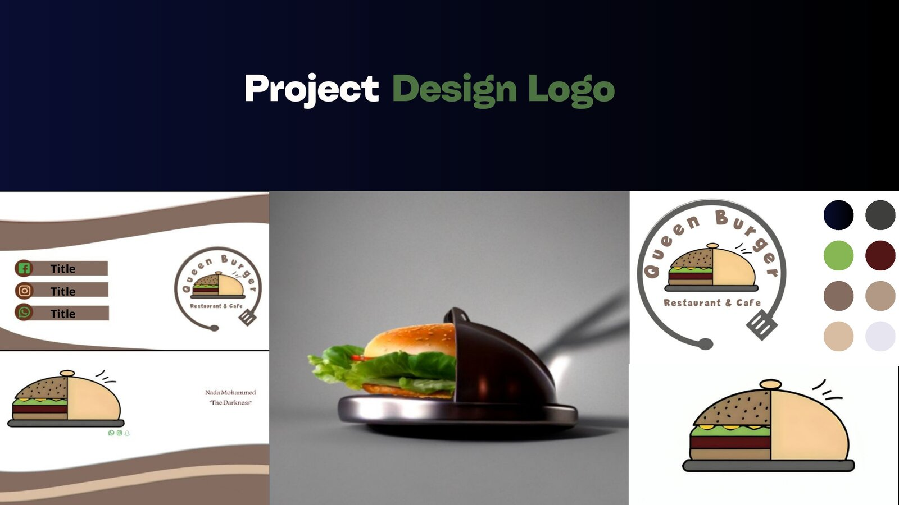
01
Logo Design
A set of brand marks exploring form, negative space and colour across different industries.
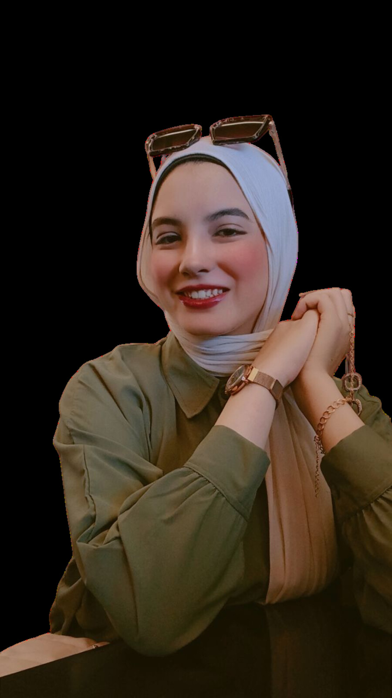
I'am a Graphic Designer — turning ideas into visual identities that hold their ground.
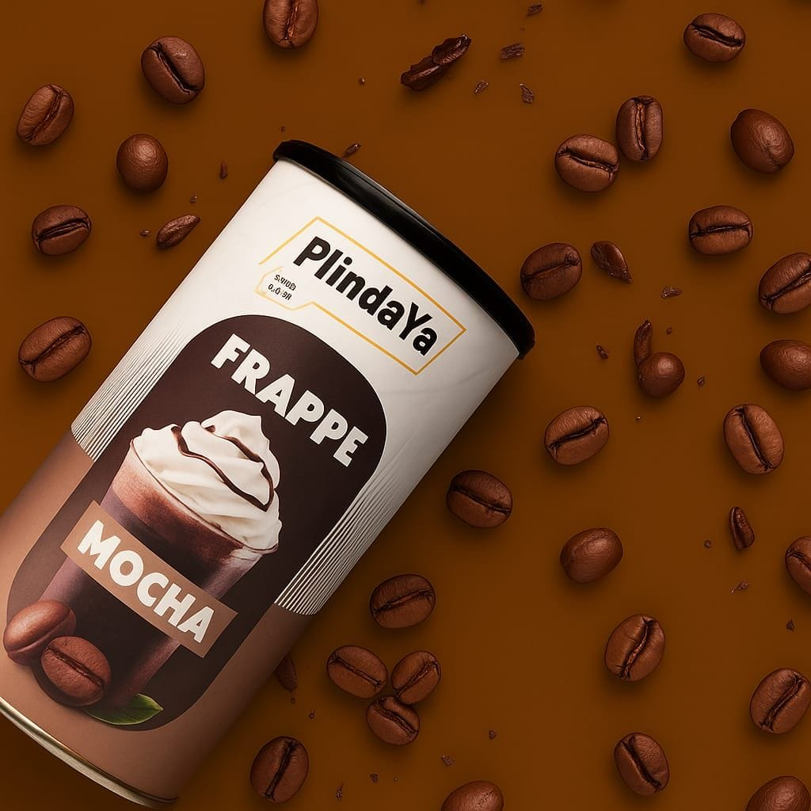
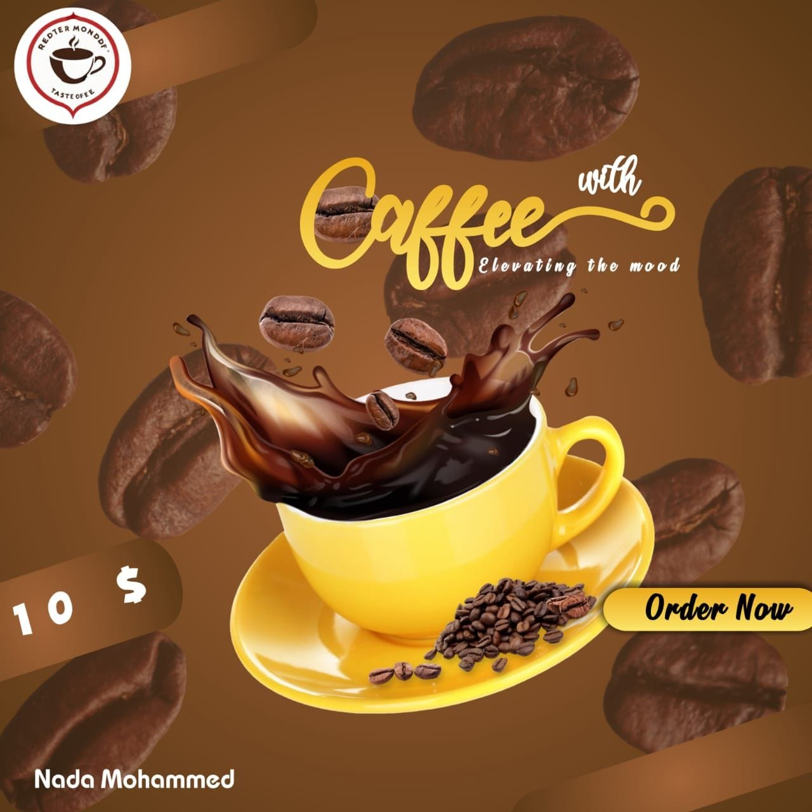
Cairo · Available for freelance01 — About
I am passionate and dedicated to turning ideas into creative and innovative designs. With experience in understanding client needs, I transform concepts into eye-catching visuals that deliver the desired impact.
My work isn't just about creating beautiful designs — it's a combination of creativity and strategy to achieve your goals visually. I bring your vision to life through designs that resonate perfectly with your audience.
02 — Selected Work
A collection of logo, brand identity, print and social campaigns — each one built to earn attention and hold it.

A set of brand marks exploring form, negative space and colour across different industries.
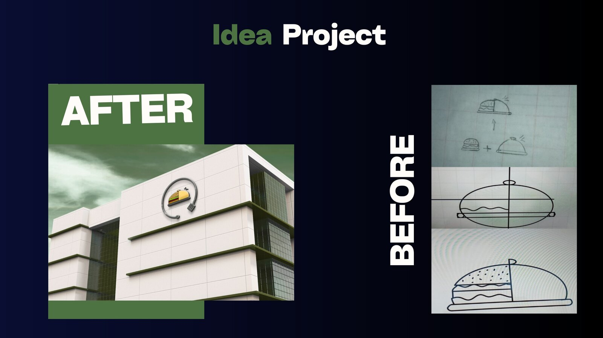
A before/after case study showing how a raw concept becomes a refined, print-ready card.
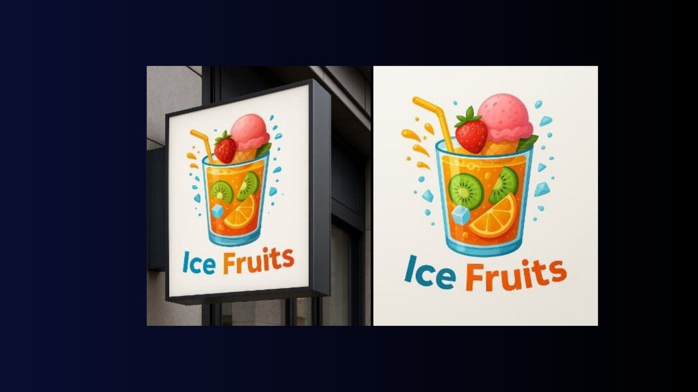
Tactile, minimal card systems designed to feel premium in hand.
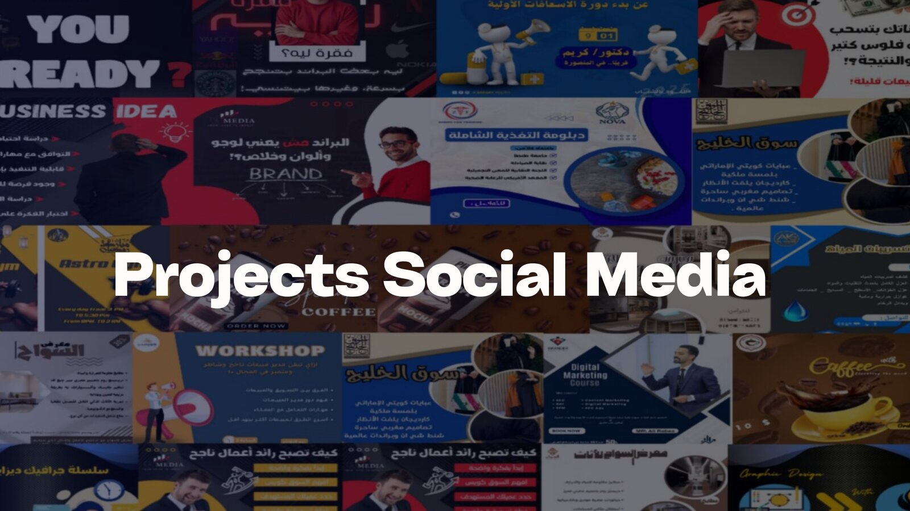
A cohesive post system built for consistency across a brand's social feed.
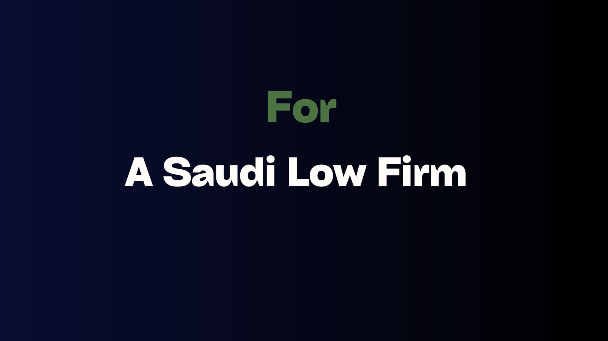
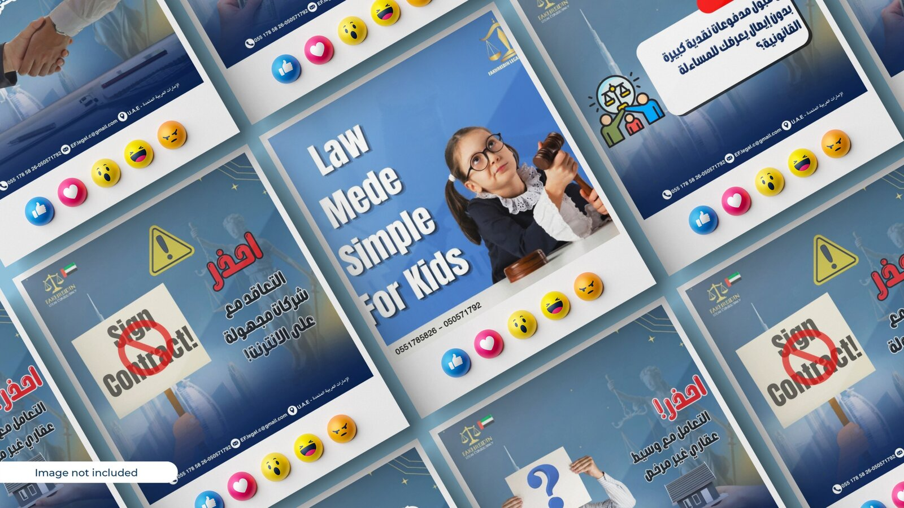
A full identity system — mark, stationery and marble-black brand world for a law practice.
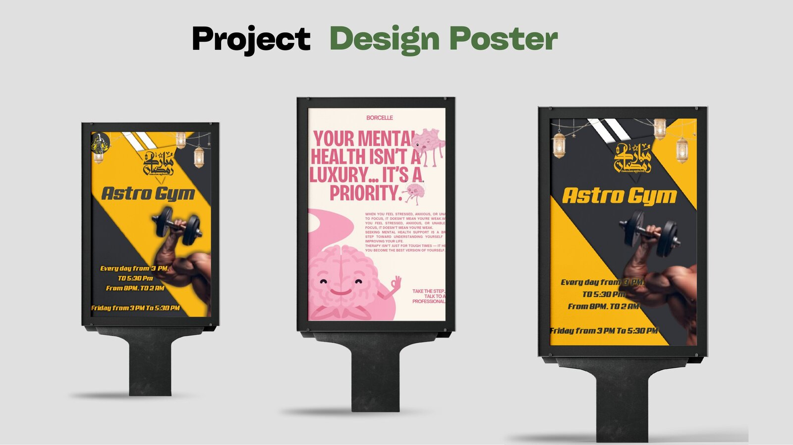
Editorial posters balancing bold type with clinical, confident colour.
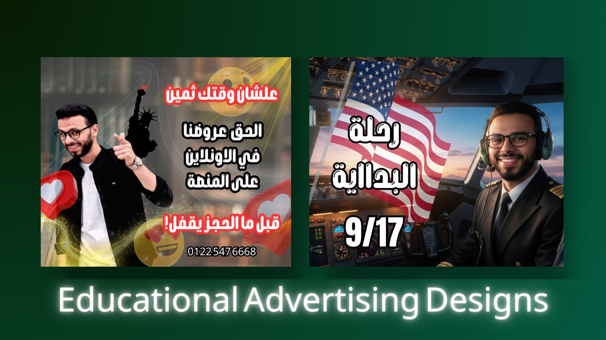
A grid of ad creatives built to sell online courses at a glance.
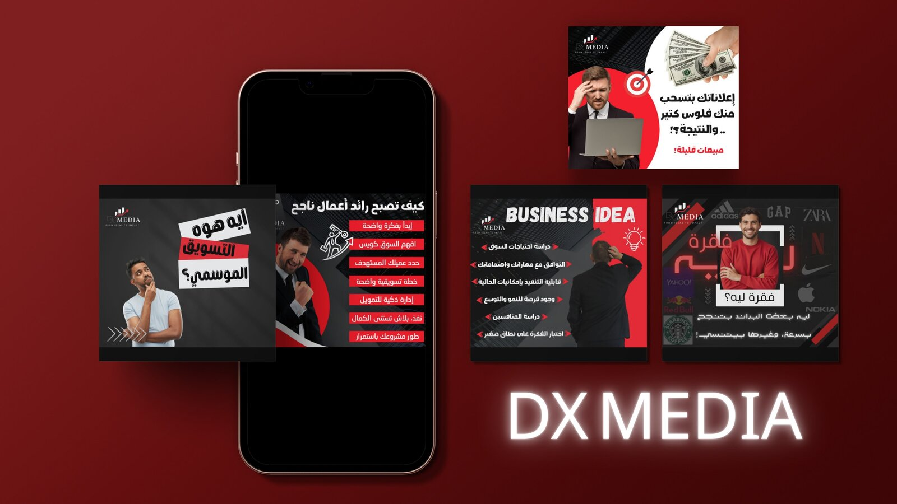
A darker, high-contrast social system for a media-focused client.
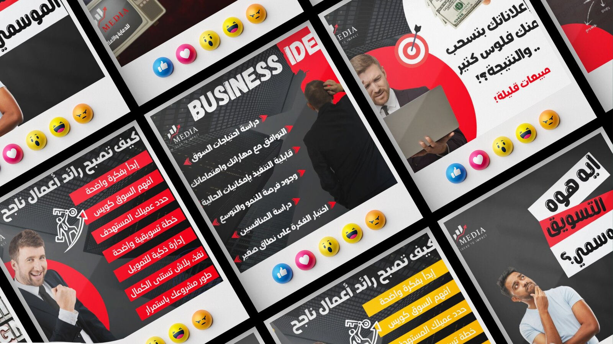
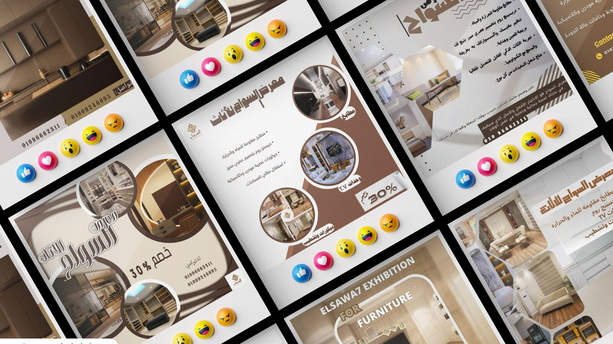
A warm, gold-on-dark brand world built for a furniture house's social presence.
03 — Contact
Have a brand, a print piece, or a campaign that needs a point of view? Tell me about it.
hello@nadamohammed.design